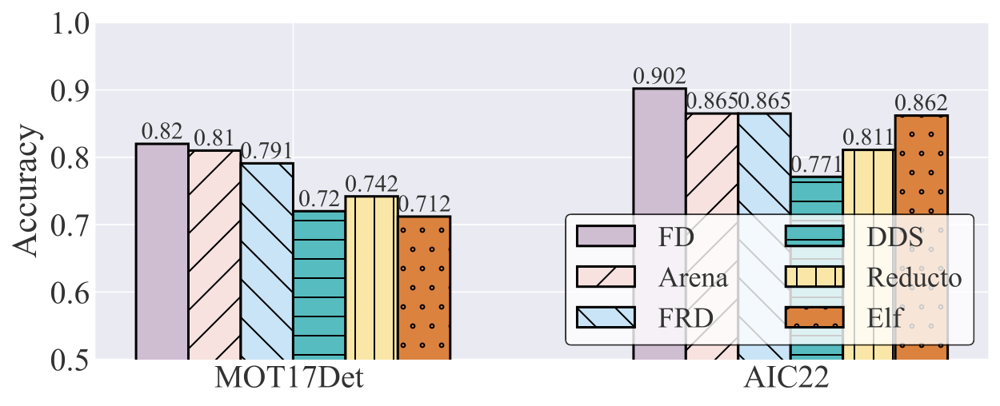

Accuracy
The accuracy of different methods on two datasets. Arena can maintain accuracy losses within 1% and 4%.
The accuracy of different methods on two datasets. Arena can maintain accuracy losses within 1% and 4%.
The normalized bandwidth usage of different methods on two datasets.
The average end-to-end latency per frame of different methods on two datasets. End-to-end latency includes a breakdown of preprocessing, transmission, and inference time.

@misc{peng2024arena,
title={Arena: A Patch-of-Interest ViT Inference Acceleration System for Edge-Assisted Video Analytics},
author={Haosong Peng and Wei Feng and Hao Li and Yufeng Zhan and Qihua Zhou and Yuanqing Xia},
year={2024},
eprint={2404.09245},
archivePrefix={arXiv},
primaryClass={cs.MM}
}